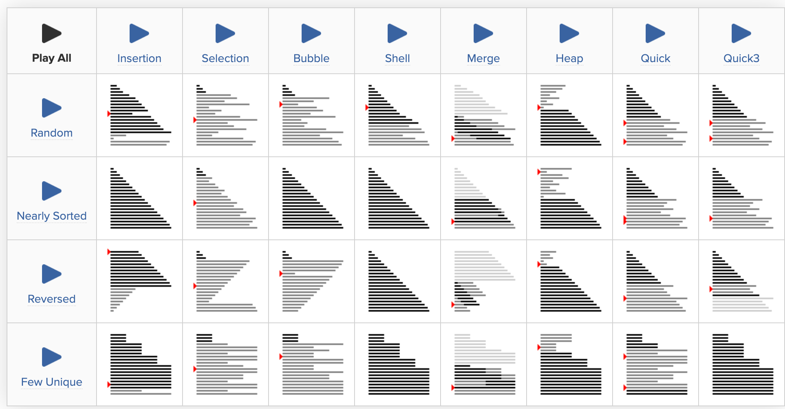
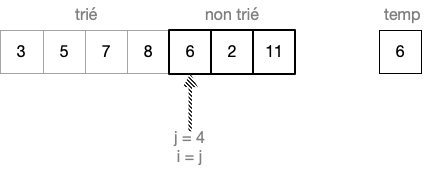
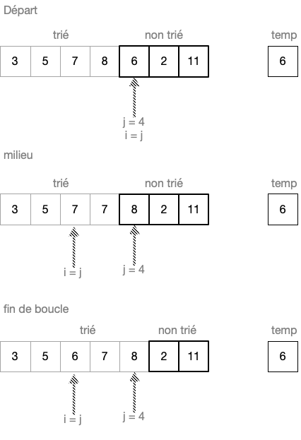

algorithmes de tri
Ce cours comporte plusieurs parties
- voir la page sur la complexité
- la page sur la récursivité
- principaux algorithmes de tri
- appliquer les algos de tri: TP, tri à partir d’une clé
- méthodes Diviser pour regner
Algorithmes de tri
Les activités de tri sont très fréquents en informatique. Dans un projet informatique, on préfère qu’un programme passer du temps à trier les données plutôt qu’à les rechercher.
On presente dans ce chapitre TROIS algorithmes de tri. Mais il en existe de très nombreux, dont l’efficacité diffère grandement. Voici un aperçu de la durée comparée de quelques algorithmes de tri, selon la nature de la liste à trier:

comparatif de performance de quelques algorithmes de tri
| Nombre d’éléments « n » | Nombre d’opérations pour un tri en « O(n²) » | Durée pour un tri en « O(n²) » |
|---|---|---|
| 10 | 100 | 100 ns |
| 100 | 10 000 | 10 us |
| 1 000 | 1 000 000 | 1 ms |
| 10 000 | 100 000 000 | 100 ms |
| 100 000 | 10 000 000 000 | 10 s |
| 1 000 000 | 1 000 000 000 000 | 16 min 40 s |
| 10 000 000 | 100 000 000 000 000 | 27 heures |
| 100 000 000 | 10 000 000 000 000 000 | 115 jours |
| 1 000 000 000 | 1 000 000 000 000 000 000 | 31 ans |
| 8 000 000 000 (population mondiale) | 64 000 000 000 000 000 000 | 1984 ans |
Pour un algorithme de complexité O(n.log(n)), la durée de tri d’un ensemble de 8 000 000 000 valeurs prendrait 4 min!
tableau issu de podcastscience.fm
Le tri par insertion
Principe
Pour cet algorithme, trier, c’est déplacer des éléments, et y insérer l’élément rangé, depuis le debut déjà trié de la liste, jusqu’à la fin. C’est un peu la manière avec laquelle on range les cartes à jouer au debut d’une partie:
main d'une partie de cartes
- Hypothèse : l’élément non rangé est le j. Tous les autres éléments sont rangés jusqu’à j.
- Il faut d’abord conserver sa valeur à l’aide d’une variable temp
- On décale tous les éléments i, depuis le rang j jusqu’à l’élément dont la valeur est inférieure à celle de j (et donc de temp), en redescendant.

animation sur le tri par insertion
Sur l’animation: on devine le script de la boucle interne:
- Dans la partie non triée, selectionner la premiere carte. La reserver en laissant la place libre
- faire glisser les cartes de la partie gauche (triée) vers la droite pour laiser la place libre à la carte à insérer (correspond à un copier-coller des cartes i-1 => i)
- insérer la carte réservée à sa place.
Preuve de correction
Montrons qu’à la fin d’un tour de boucle, les valeurs de la liste sont triées jusqu’au rang j inclus:
- au début, j vaut 0. Il ne se passe rien.
- puis j vaut 1. temp vaut L[1]. Dans la boucle secondaire (
while), à la ligne 5, si L[0] > temp, alors L[1] = L[0] puis L[0] = temp. La liste est alors triée jusqu’à j = 1 inclus. - supposons qu’à la fin du tour j-1, les valeurs sont triées jusqu’à j-1 inclus. Il faut alors montrer que, lors du tour j, la valeur temp (qui vaut L[j]) sera insérée au bon endroit.
Pour aider le raisonnement, on utlisera le tableau exemple suivant:

liste triée jusqu'au rang j = 3
Cas n°1: Soit L[j] >= L[0]:
Après la ligne 4, on entre dans la boucle while. A la fin de cette boucle, avant la ligne 8, on a la configuration milieu pour la liste.
Alors la boucle n’est plus executée car L[i-1] > temp vaut False, donc, ligne 9: L[i] = temp. La liste est alors dans la configuration fin de boucle sur l’image suivante.

liste triée jusqu'au rang j = 4 inclus
Cas 2: L[j] < L[0]: prendre l’élement au rang j = 5 de la liste précédente.
On verifie que while quitte pour i = 0 et que la clé temp est bien insérée dans la case 0. La liste est bien triée jusqu’à j = 5 inclus.
Conclusion: Lorsque la boucle for execute son dernier tour, j designe la dernière case, et on a bien montré que la liste sera bien triée jusqu’à cette case. Donc la liste est entièrement triée.
Complexité
Calcul du nombre d’opération
Supposons que la taille de la liste est n.
Les opérations significatives sont:
- l’affectation
- la comparaison
- l’une des opérations arithmetiques: +, -, *, /
La boucle forest executée n fois.
Dans le pire des cas, où la liste classerait les éléments dans l’ordre décroissant, T(n) sera alors:
$$T_1(n) = n \times 2~(lignes~3~et~4)+ n~(ligne~8)$$$$T_2(n) = [2~(ligne~5) + 2~(ligne~6)+2~(ligne~7)]\times[1+2+ ... +(n-1)]$$
$$T(n) = T_1 + T_2$$
Soit
$$T(n) = 3n + 6\times \tfrac{n\times(n-1)}{2}$$$$T(n) = 3n^2$$La complexité est donc $O(n^2)$. (coût quadratique). Et si la liste est déjà triée, le nombre d’opérations est quand même T(n) = 5.n (coût linéaire).
Evaluation rapide de la complexité
On peut compter le nombre de déplacements / affectations réalisés pour trier les valeurs de la liste, en fonction de la valeur j:
| j | nombre d’opérations dans le pire des cas |
|---|---|
| 1 | 3 |
| 2 | 4 |
| 3 | 5 |
| 4 | 6 |
| … | … |
| n-1 | n+1 |
La somme de cette série arithmétique est alors $S_n = (n+4)\times(n-1)$
Soit $O(n^2)$ pour la complexité asymptotique.
Le tri par selection
Tri par selection du plus petit élement
Sur un tableau de n éléments (numérotés de 0 à n-1), le principe du tri par sélection est le suivant :
- rechercher le plus petit élément du tableau, et l’échanger avec l’élément d’indice 0 ;
- rechercher le second plus petit élément du tableau, et l’échanger avec l’élément d’indice 1 ;
- continuer de cette façon jusqu’à ce que le tableau soit entièrement trié (jusqu’au rang n-2).
animation sur le tri par selection
Sur l’animation: on devine le script de la boucle interne:
- On selectionne la premiere carte de la partie non triée
- On observe la première carte à sa droite
- Si la carte marquée est inférieure à la carte du debut, on marque la nouvelle carte (et on retire la marque de la precedente marquée)
- Une fois arrivée au bout de la liste: si la carte marquée est différente de la carte selectionnée (donc inférieure), on permute les 2 cartes.
Tri par selection du plus grand élément
Dans cette variante du tri par selection, la liste est triée depuis le plus grand élément jusqu’au plus petit.
On modifie pour cela la fonction select: on remplace les instructions ndiceDuMin=debut et T[k]< T[indiceDuMin] afin de rechercher la valeur max et non celle min.
Exemple
Le tri peut aussi se faire à partir du rang des caractéres dans l’alphabet (lexicographique).
Soit la liste à trier [‘T’, ‘I’, ‘M’, ‘O’, ‘L’, ‘E’, ‘O’, ‘N’] La liste prend successivement les valeurs:
| j | Liste à la fin de select |
nombre de comparaisons effectuées |
|---|---|---|
| 0 | [‘T’, ‘I’, ‘M’, ‘O’, ‘L’, ‘E’, ‘O’, ‘N’] | 7 |
| 1 | [‘T’, ‘O’, ‘M’, ‘I’, ‘L’, ‘E’, ‘O’, ‘N’] | 6 |
| 2 | [‘T’, ‘O’, ‘O’, ‘I’, ‘L’, ‘E’, ‘M’, ‘N’] | 5 |
| 3 | [‘T’, ‘O’, ‘O’, ‘N’, ‘L’, ‘E’, ‘M’, ‘I’] | 4 |
| 4 | [‘T’, ‘O’, ‘O’, ‘N’, ‘M’, ‘E’, ‘L’, ‘I’] | 3 |
| 6 | [‘T’, ‘O’, ‘O’, ‘N’, ‘M’, ‘L’, ‘E’, ‘I’] | 2 |
| 7 | [‘T’, ‘O’, ‘O’, ‘N’, ‘M’, ‘L’, ‘I’, ‘E’] | 1 |
Tri à l’aide d’une clé: voir TP
Complexité
On voit que le nombre d’operations de comparaisons est constant quelle que soit la liste à trier. Alors que l’affectation est aleatoire, et depend de la position des elements. On decide donc de compter le nombre de comparaisons.
Pour l’exemple ci-dessus, ce nombre T(8) = 2 + 3 +’ 4 + 5 + 6 + 7 = 27
De manière plus générale: $T(n) = \tfrac{n \times (n-1)}{2}$, ce qui fait une complexité $O(n^2)$
Le tri fusion
Principe
Le tri pas fusion procède en 2 étapes distinctes. Il s’agit d’un algorithme de type récursif. Au cours de la descente, la liste de valeurs non triées est divisée en 2 parties égales (ou presque) à chaque appel recursif. Puis, lors de la remontée, ces listes, triées sont interclassées, comme vu sur l’animation suivante:
animation sur l'interclassement de 2 listes triées
C’est donc sur la remontée que l’on range les éléments par valeur croissante.
Sur l’animation: on devine le script de la fonction d’interclassement:
- comparer les valeurs des bords gauche de chaque sous liste triée
- ajouter le plus petit élément des 2 sous listes dans une troisieme liste
- déplacer le bord gauche de la sous liste dont on a selectionné l’élément
L’algorithme est naturellement décrit de façon récursive.
- Si le tableau n’a qu’un élément, il est déjà trié.
- Sinon, séparer le tableau en deux parties à peu près égales.
- Trier récursivement le sous-tableau de gauche avec ce même algorithme du tri
- Trier récursivement le sous-tableau de droite avec ce même algorithme du tri
- Fusionner les deux tableaux triés en un seul tableau trié.
introduction au tri fusion
Le tri fusion est traité en détail au chapitre diviser pour regner
Suite
Liens
- TP1: Comparaison de l’efficacité de divers algorithmes de tri: notebook a telecharger
- TP1: version Colab du notebook
- TP2: variations sur le tri par selection, indice UEFA: version colab